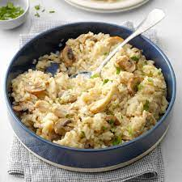
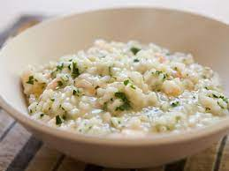

Pressure-Cooker Risotto with Chicken and Mushrooms


Portobello mushrooms add an earthy flavor to this creamy classic,
while shredded rotisserie chicken makes it a snap to prepare.
Ingredients
- 4 tablespoons unsalted butter, divided
- 2 tablespoons olive oil
- 1/2 pound sliced baby portobello mushrooms
- 1 small onion, finely chopped
- 1-1/2 cups uncooked arborio rice
- 1/2 cup white wine or chicken broth
- 1 tablespoon lemon juice
- 1 carton (32 ounces) chicken broth
- 2 cups shredded rotisserie chicken
- 3 tablespoons grated Parmesan cheese
- 2 tablespoons minced fresh parsley
- 1/2 teaspoon salt
- 1/4 teaspoon pepper
Procedure
- On a 6-qt. electric pressure cooker, select the saute setting;
adjust for medium heat. Add 2 Tbsp. butter and oil. Add mushrooms
and onion; cook and stir until tender, 6-8 minutes. Add rice; cook
and stir until the rice is coated, 2-3 minutes.
- Stir in wine and lemon juice; cook and stir until liquid is absorbed.
Press cancel. Pour in broth. Lock lid; close pressure-release valve. Adjust
to pressure-cook on low for 4 minutes. Quick-release pressure. Stir until combined;
continue stirring until creamy.
- Stir in the remaining ingredients and the remaining 2 Tbsp. butter. Select saute setting and adjust for low heat; heat through. Serve immediately.
Click To Return